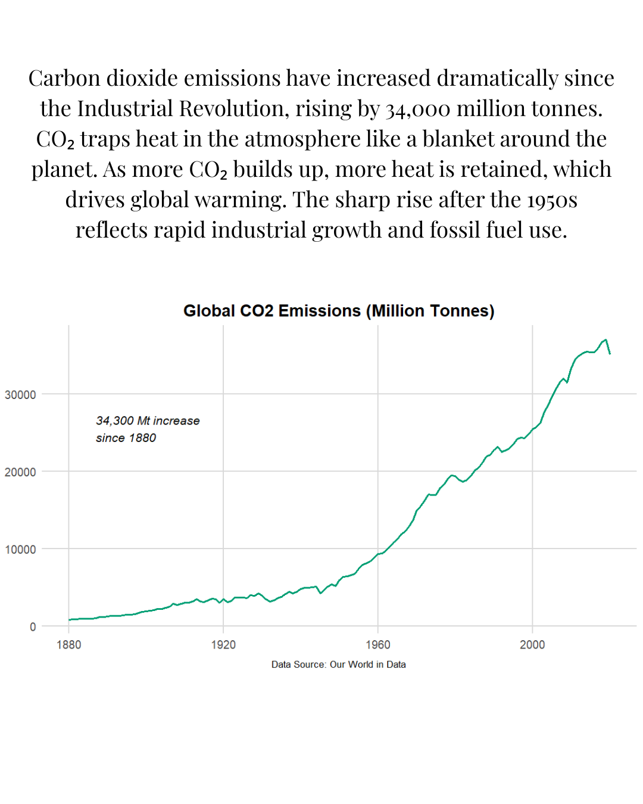
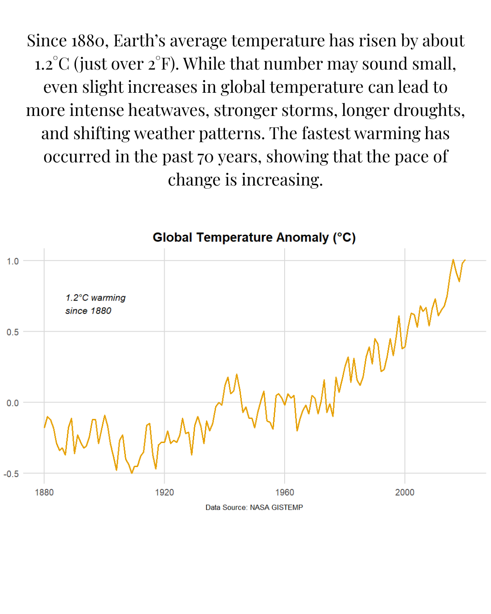
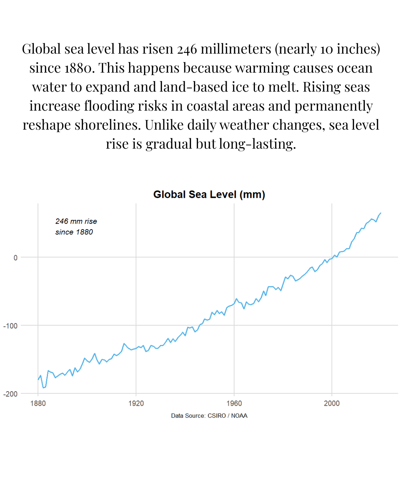
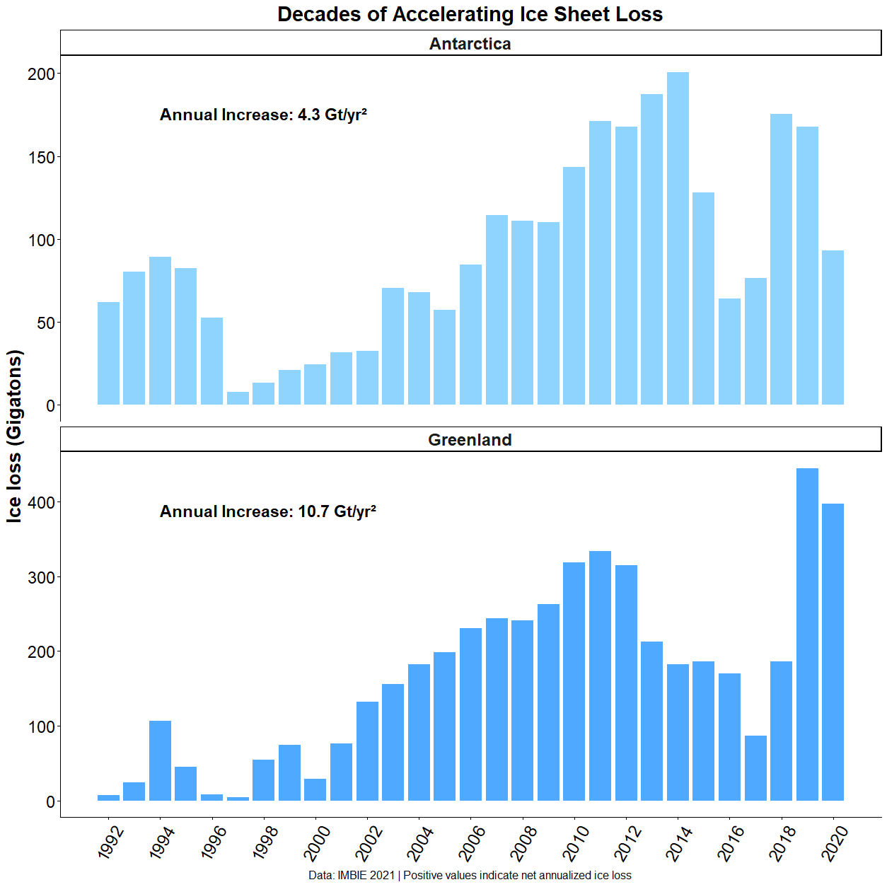
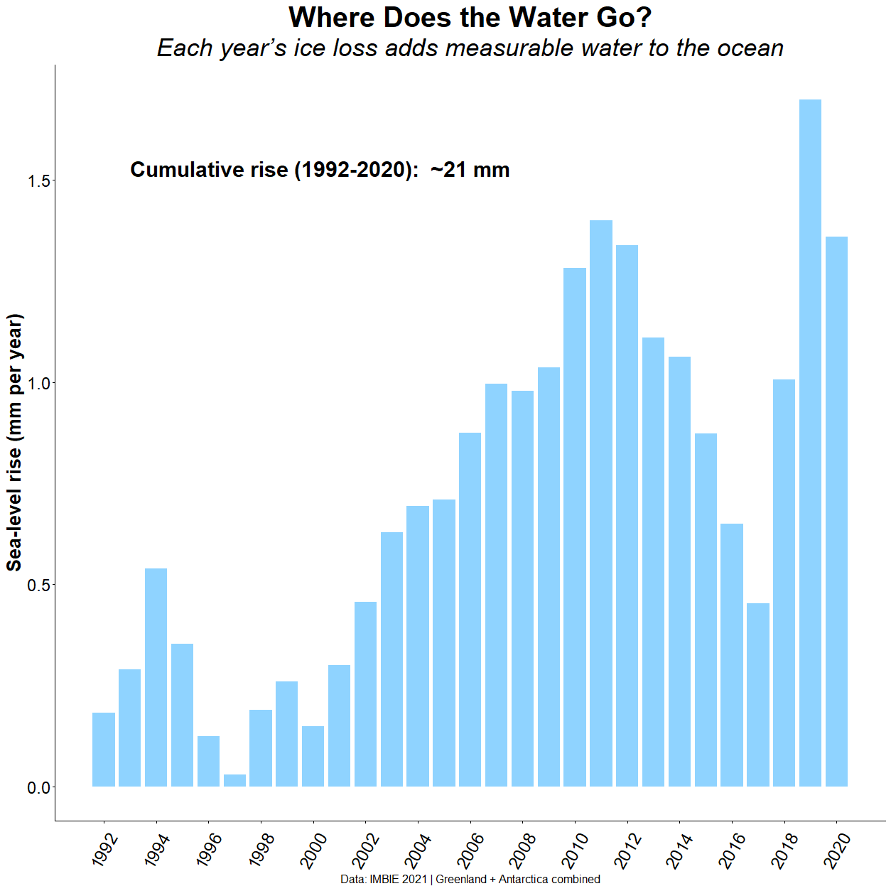

Global Climate Change Analysis
Project Overview
Climate change is often discussed through individual indicators: carbon dioxide emissions, global temperature, melting ice, or rising sea level. This project examines these indicators together to understand how major components of Earth's climate system have changed through time.
Using publicly available observational datasets, I analyzed long-term carbon dioxide emissions, global temperature anomalies, global sea level, and satellite-era measurements of mass loss from the Greenland and Antarctic ice sheets.
Rather than treating each dataset as an isolated trend, the analysis follows the progression from increasing greenhouse-gas emissions to warming, loss of land-based ice, and rising global sea level.
Questions
The project was organized around several related questions:
- How have global carbon dioxide emissions changed since the beginning of the modern industrial era?
- How has Earth's average surface temperature changed over the same period?
- Has global sea level changed alongside the observed warming?
- How much ice are Greenland and Antarctica losing?
- Has the rate of ice-sheet loss changed through time?
- How much measurable sea-level rise has recent ice-sheet loss contributed to the ocean?
Analytical Approach
Multiple datasets representing different components of Earth's climate system were cleaned, organized, analyzed, and visualized in R. Long-term records beginning near 1880 were first used to examine changes in global carbon dioxide emissions, temperature, and sea level.
The analysis was then narrowed to the satellite era to investigate changes in Greenland and Antarctica using IMBIE ice-sheet mass balance estimates from 1992–2020. Annual ice loss was compared through time and translated into sea-level equivalent to evaluate how land-based ice loss contributes to rising oceans.
1. How Have Global CO₂ Emissions Changed?
The first part of the analysis examined the human driver underlying modern climate change: carbon dioxide emissions from fossil-fuel use and industrial activity.
Global emissions increased substantially following industrialization, with particularly rapid growth occurring after the middle of the twentieth century.
The analyzed record shows an increase of approximately 34,300 million tonnes of annual CO₂ emissions since 1880.
Carbon dioxide is a greenhouse gas. Increasing atmospheric CO₂ alters Earth's energy balance by reducing the amount of outgoing heat that escapes to space.

2. Has Global Temperature Increased?

The next question was whether the observational temperature record shows a corresponding long-term change in Earth's average surface temperature.
NASA GISTEMP data show a clear increase in global temperature over the period analyzed.
Relative to conditions near the beginning of the record, Earth's average temperature has increased by approximately 1.2°C since 1880.
Individual years continue to vary, but the longer record reveals persistent warming, with the strongest warming occurring during recent decades.
3. Has Global Sea Level Also Changed?
Because warming affects both ocean temperature and land-based ice, the next analysis examined the long-term global sea-level record.
The combined CSIRO and NOAA record shows approximately 246 millimeters — nearly 10 inches — of global sea-level rise since 1880.
Global sea level rises primarily through two processes: thermal expansion of seawater as the ocean warms and the addition of water from melting land-based glaciers and ice sheets.
Unlike short-term fluctuations in local water level, global mean sea-level change represents a long-term shift in the volume and physical state of the world's oceans.

Where Is Some of That Additional Water Coming From?
The long-term records show three major changes occurring during the modern period: rapidly increasing carbon dioxide emissions, rising global temperature, and rising global sea level.
The next step was to examine one specific physical pathway linking a warmer planet to higher oceans: the loss of land-based ice from Greenland and Antarctica.
Unlike floating sea ice, land-based ice adds water that was previously stored outside the ocean when it melts or is discharged into the sea.
4. Are Greenland and Antarctica Losing More Ice?

IMBIE satellite-era estimates were used to calculate annualized ice loss separately for Greenland and Antarctica between 1992 and 2020.
Both ice sheets experienced considerable year-to-year variability, meaning that ice loss does not increase smoothly every year.
However, losses were generally much greater during the later portion of the record than during the early 1990s.
The estimated increase in annual ice loss was approximately 10.7 Gt/yr² for Greenland and 4.3 Gt/yr² for Antarctica.
5. How Much Sea-Level Rise Came From These Ice Sheets?
Ice-mass loss can also be expressed as its equivalent contribution to global mean sea level.
Combining Greenland and Antarctica makes it possible to estimate how much measurable water was added to the ocean by the two major ice sheets.
Between 1992 and 2020, the combined losses from Greenland and Antarctica contributed approximately 21 millimeters of cumulative global sea-level rise.
Annual contributions varied substantially, but their cumulative effect continued to increase as additional land-based ice was transferred to the ocean.

Conclusion
No single graph represents the entire climate system. The strength of this analysis comes from examining several independent observational records together.
The records show substantial increases in carbon dioxide emissions, a long-term increase in global temperature, continued global sea-level rise, and substantial losses from the Greenland and Antarctic ice sheets.
The ice-sheet analysis provides a particularly clear physical connection between changes occurring in the polar regions and impacts elsewhere: land-based ice lost from Greenland and Antarctica becomes additional ocean water and contributes measurably to global sea-level rise.